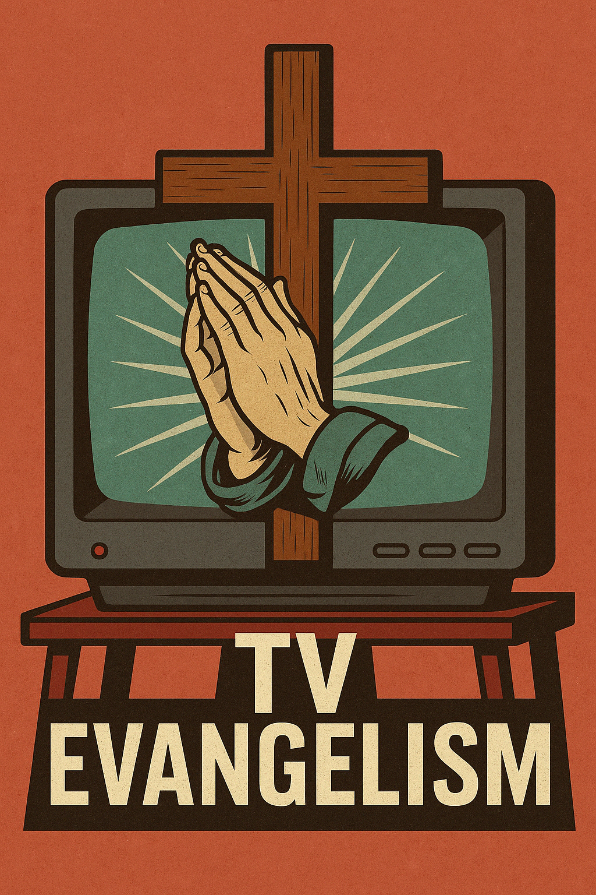

Publicado em 2025-04-22 09:12:39
Por Francisco Gonçalves – fragmentoscaos.eu
Vivemos tempos em que a televisão já não informa, não educa, não liberta. Limita-se a ocupar o espaço da consciência coletiva com ruído, como quem despeja areia nos olhos de um povo. Os canais públicos e privados tornaram-se púlpitos da mediocridade e instrumentos do adormecimento popular.
Ontem, o país parou. Todos os canais – todos – renderam-se ao luto contínuo pela morte do Papa Francisco. O mesmo Papa que, apesar da sua postura progressista e humana, representava uma instituição arcaica, patriarcal e muitas vezes cúmplice com os grandes poderes.
Durante 24 horas por dia, o ecrã transformou-se num altar. Repetições infinitas. Comentadores comovidos. Repórteres com ar devoto. O mesmo tom, o mesmo texto, a mesma encenação. Como se Portugal fosse um Estado confessional. Como se todos os portugueses fossem crentes. Como se o tempo, a vida, os problemas reais — deixassem de existir.
Esta não é homenagem. É evangelização encapotada. É lavagem emocional. É imposição ideológica.
Portugal é uma república laica. Mas a televisão age como se fôssemos súbditos espirituais da Santa Sé. E o mais chocante: ninguém questiona. Ninguém interrompe. Ninguém contraria.
E o que há quando não há um Papa a morrer? Reality shows, crime do dia, discussões fabricadas, talk shows de vazio. Programas educativos? Zero. Ciência? Marginal. Documentários sobre a realidade portuguesa? Só se for para vender lágrimas ou patriotismo de plástico.
Ironicamente, nos tempos de Salazar, com censura oficial, ainda se transmitia cultura, arte e informação séria. Hoje, com liberdade formal, reina a servidão mental.
Porque os canais de televisão, tal como os partidos dominantes, foram colonizados por interesses. E esses interesses não querem cidadãos lúcidos — querem consumidores obedientes, espectadores dóceis, fiéis manipuláveis.
A televisão deixou de ser janela para o mundo. Agora é espelho de um sistema que se recusa a pensar.
Mas há quem não aceite. Há quem escreva. Há quem desligue a televisão e ligue a mente.
Esta crónica é um desses gestos. Um murro no silêncio. Um grito contra os altares do vazio.